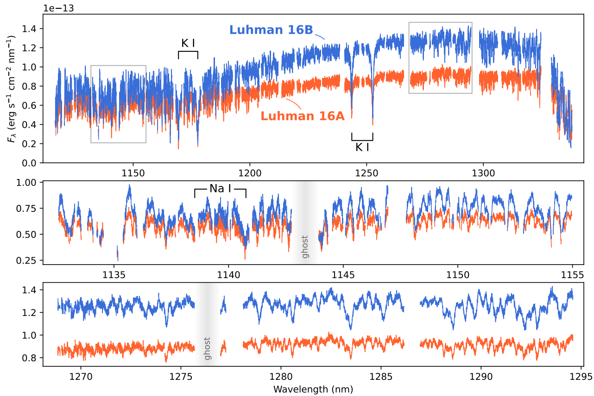

Clouds and Line Asymmetries for the Nearest Brown Dwarfs
In this paper, I present an analysis of the Luhman 16 binary, observed as part of the ESO SupJup Survey. The two L-T transition brown dwarfs were observed in the J-band around 1.2 μm. Here, we find absorption from H2O, K, Na, and, for the first time in this wavelength range, HF. Using atmospheric retrieval analyses, we investigate the abundances of these chemical species as well as the presence of clouds.
Our analysis suggests that Luhman 16B hosts a more inhomogeneous cloud deck compared to Luhman 16A, which is in line with previous observations. Furthermore, the high spectral resolution of CRIRES+ resolves an asymmetry in the potassium (K) absorption lines, resulting from collision-induced perturbations to the transition energies.
